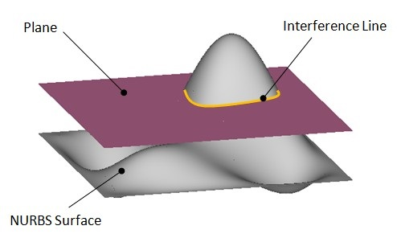
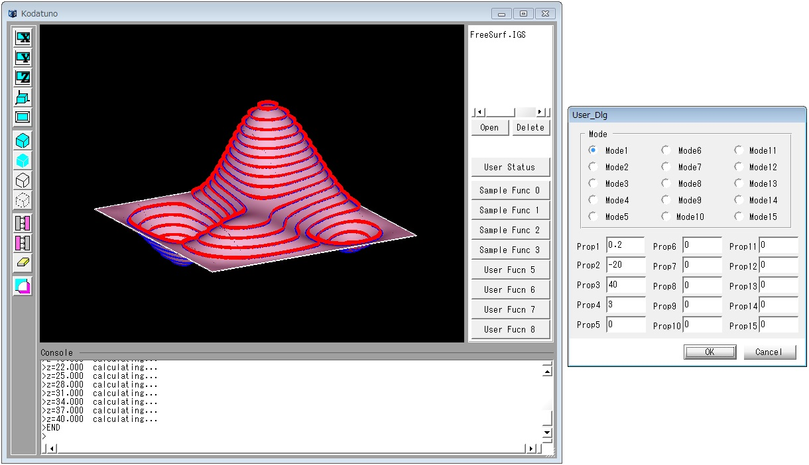

（Ex．6）等高線を生成する
等高線は3次元空間上の曲面における，ある方向の値が等しい点の集合です．これを求めるということは，言い換えれば，
曲面と平面の干渉線を求めているということになります．

本例題では，図に示すように，Z方向に平面をZ_minからZ_maxまであるシフト量Dでシフトしていきながら，それぞれの等高線
を求めていきます． ここで，"等高線"と言っていますが，実際には点群によって表現しています． "SampleFunc2.cpp"の
SmpContourLine()を実行します．
＜実行手順＞
- Kodatunoアプリケーションを起動し，適当なIGESデータを1つ読み込みます．
- 表示されたBodyから面をピックします．ピックする面の数は1個にしてください．
- "User Status"からMode1を選択し，Prop1に交点群の点間隔(0.1〜2程度)，Prop2にZ_min, Prop3にZ_max, Prop4に平面のシフト量Dを入力します．
- "Sample Func 2"ボタンを押します．
- 選択した面上に等高線が生成されたことを確認してください．

＜ソース解説＞
今回はユーザー用ボタンの3つ目，"Sample Func 2"を押したことに注意してください．これによって"UserFunc.cpp"のUSER
クラスのコンストラクタのExecSampleFunc2()が実行される ことになります．
// Sample5: 曲面のUVパラメータで等間隔に分割した点を生成する
int SmpUVDivLine(BODYList *BodyList,OBJECTList *ObjList, int PickCount, double Prop[])
{
if(!PickCount) return KOD_ERR; // セレクションされていなかったら、何もしない
NURBS_Func nfunc; // NURBSを扱う関数集を呼び出す
double green[3] = {0,1,0}; // 点表示の色(緑)
OBJECT *obj = (OBJECT *)ObjList->getData(0); // 一番最初にセレクションされたエンティティの情報を得る
BODY *body = (BODY *)BodyList->getData(obj->Body); // 一番最初にセレクションされたBODYの実体を得る
// 本来であれば，Sample4に示した曲面のタイプによる条件分岐が必要であるが，これ以降のSampleではトリム面で決め打ちする
if(obj->Type != _TRIMMED_SURFACE) return KOD_ERR;
NURBSS *S = body->TrmS[obj->Num].pts; // BODYからNURBS曲面を取り出す
int u_divnum = (int)Prop[0]; // ユーザーステータスのprop1をu方向分割数として読み込み
int v_divnum = (int)Prop[1]; // ユーザーステータスのprop2をv方向分割数として読み込み
double u_val = (S->U[1] - S->U[0])/u_divnum; // パラメトリック空間内でのu方向線分長を得る
double v_val = (S->V[1] - S->V[0])/v_divnum; // パラメトリック空間内でのv方向線分長を得る
// u方向，v方向の各分割点における座標値を求める
for(int i=0;i<=u_divnum;i++){
for(int j=0;j<=v_divnum;j++){
Coord P = nfunc.CalcNurbsSCoord(S,S->U[0]+u_val*i,S->V[0]+v_val*j); // 指定した(u,v)の座標値を求める
DrawPoint(P,1,3,green); // 描画
}
}
return KOD_TRUE;
}
Mode1を選択したので，UserStat.Modeには0が代入されており，6行目のSpmContorLine()が実行されることになります．
では，SmpContourLine()を見てみましょう．SmpContourLine()は"SampleFunc2.cpp"に記述されています．
// Sample6: 等高線を生成する
// 具体的には，NURBS曲面と平面との交線(交点群)をZ方向に順次求めていく
// さらに，その交点群の法線ベクトルも算出する
int SmpContourLine(BODYList *BodyList,OBJECTList *ObjList, int PickCount, double Prop[])
{
if(!PickCount) return KOD_ERR; // セレクションされていなかったら、何もしない
clock_t start,end;
start = clock();
NURBS_Func nfunc; // NURBSを扱う関数集を呼び出す
OBJECT *obj = (OBJECT *)ObjList->getData(0); // 一番最初にセレクションされたエンティティの情報を得る
BODY *body = (BODY *)BodyList->getData(obj->Body); // 一番最初にセレクションされたBODYの実体を得る
if(obj->Type != _TRIMMED_SURFACE) return KOD_ERR; // セレクションされた曲面がトリム面でない場合は終了
NURBSS *S = body->TrmS[obj->Num].pts; // BODYからNURBS曲面を取り出す
Coord t[5000]; // 解格用納
double red[3] = {1,1,0}; // 法線ベクトル表示の色
double blue[3] = {0,0,1}; // 点表示の色
char mes[256]; // メッセージ出力用
double feed = 0.2;//Prop[0]; // 交点群の点間隔
double under = 0.01;//Prop[1]; // 等高線のZ_min
double upper = 100;//Prop[2]; // 等高線のZ_max
double delta = 1;//Prop[3]; // 等高線生成のZ間隔
int step = fabs(upper - under)/delta + 1; // 等高線の本数を算出
Coord nvec = SetCoord(0,0,1); // 平面の法線ベクトルを指定(X-Y平面とする)
// 平面をZ方向にシフトしていきながら，等高線を算出する
for(int i=0;i< step;i++){
double z = under + delta*(double)i; // 現在の平面のZ位置
Coord pt = SetCoord(0,0,z); // 現在の平面上の1点を指定
sprintf(mes,"z=%.3lf calculating...",z);
GuiIF.SetMessage(mes);
int num = nfunc.CalcIntersecPtsPlaneSearch(S,pt,nvec,feed,3,t,5000,RUNGE_KUTTA); // NURBS曲面と平面との交点群を交線追跡法で求める
for(int i=1;i< num;i++){ // 交点の数だけループ
Coord p = nfunc.CalcNurbsSCoord(S,t[i].x,t[i].y); // 交点をパラメータ値から座標値へ変換
Coord p_ = nfunc.CalcNurbsSCoord(S,t[i-1].x,t[i-1].y);
//Coord nt = nfunc.CalcNormVecOnNurbsS(S,t[i].x,t[i].y); // 交点上の法線ベクトルを計算
//nt = MulCoord(nt,-2); // 外向き法線ベクトルへ変換し適当な長さにする
if(CalcDistance(p,p_) < 1)
DrawLine(p_,p,3,red);
//DrawPoint(p,1,3,red); // 交点を描画
//DrawVector(p,nt,1,1,red); // 法線ベクトルを描画
}
}
GuiIF.SetMessage("END");
fprintf(stderr,"all step num = %d\n",step);
end = clock();
fprintf(stderr,"%.2f sec\n",(double)(end-start)/CLOCKS_PER_SEC);
return KOD_TRUE;
}
6〜22行目まではこれまでの例題と同じですので，説明を省略します．19行目のCoord t[5000]は，等高線として得られた
点群を格納するための箱として用意しています．
24〜27行目では，今回は4つのプロパティ値を入力しましたので，それらを取り出しています．28行目では平面をシフト
させる回数を計算しています． NURBS曲面と平面との交点群を算出する関数は40行目のNURBS_Func::CalcIntersecPtsPlaneSearch()
によって行われます．この関数に平面の情報を引数として与える必要が あります．平面を定義する方法はいくつかありますが，
ここでは平面上の1点ptとその平面の法線ベクトルnvecによって定義し，この2つのパラメータを引数にします． 今回はX-Y平面に
平行な面つまり，平面の法線ベクトルはZ方向に等しいことになりますので，30行目に示すように，nvecに(0,0,1)というベクトルを
与えます． 平面上の1点ptは現在の平面のZ値を与えればよいので，34, 35行目の計算によって与えることができます．
40行目のNURBS_Func::CalcIntersecPtsPlaneSearch()によって算出された交点群は，引数として与えたtに格納され，その点数は
返値として受け取ります． ここで注意しなければならないことは，交点群はパラメータ(u, v)として(t.x, t.y)に格納される
というところです．よって3次元空間上の点にするには，NURBS_Func::CalcNurbsSCoord()を 用いる必要があります(43行目)．
また本例題では，おまけとして各交点における法線ベクトルを44行目で算出しています．交点，法線ベクトルは，ともに赤色で
表示しています(46, 47行目)．
以上で(Ex. 6)の解説を終了します．次はNURBS曲面同士の交線算出を行います．